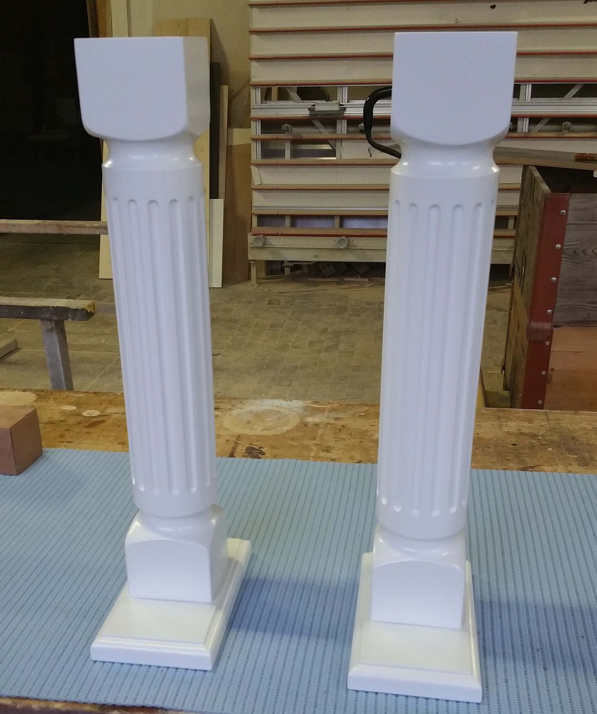

Möbel nach Mass
Schränke, Tische, Stauraum und Ergänzungen zu bestehenden Einrichtungen. Wir nehmen Mass vor Ort und fertigen passend zum Raum.
- Einbauschränke und Schränke unter Dachschrägen
- Tische, Stühle und Einzelmöbel
- Ergänzungen zu bestehendem Mobiliar